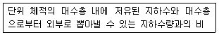
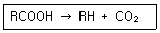
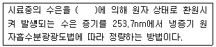
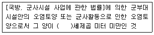
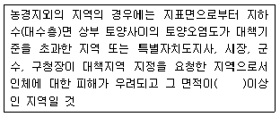
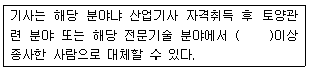
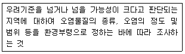
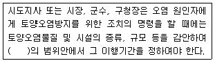
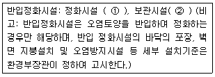
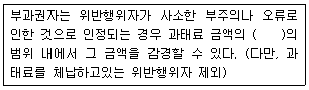

토양환경기사 (2013-09-28 기출문제)
1과목: 토양학개론
1. 토양구성 입자의 직경, 즉, 입도분포 결정을 위한 체분석시 활용되는 곡률계수(Cz)의 정의로 옳은 것은?(단, D10, D30, D60는 각각 체를 통과한 흙의 누적백분율인 통과백분율 10%, 30%, 60%에 해당되는 입경이다)
- Cz = [ D30/(D60× D10)2]
- Cz = [ D302/(D60× D10)]
- Cz = [ D60/(D30× D10)2]
- Cz = [ D602/(D30× D10)]
(정답률: 88%)

2. 토양 콜로이드 입자에 흡착되는 다음의 양이온의 흡착세기를 순서대로 옳게 나열한 것은?
- K = NH4> H > Ca = Mg > Na
- Ca > H > Mg > K > Na = NH4
- Mg = Ca > H > K > Na = NH4
- H > Ca = Mg > K = NH4> Na
(정답률: 64%)
3. 토양층위(토양단면) 중 토양생성작용 즉, 풍화작용을 거의 받지 않은 모재층에 해당되는 것은?
- B 층
- C 층
- D 층
- E층
(정답률: 93%)
4. 다음 중 토양 오염의 특징으로 적합하지 않은 것은?
- 오염경로의 다양성
- 오염영향의 국지성
- 피해발현의 긴급성
- 오염의 비인지성
(정답률: 90%)
5. 토양환경 내 오염물질의 가수분해(1차 반응)에 영향을 미치는 요인에 관한 설명으로 옳지 않은 것은?
- 점토의 함량이 클수록 가수분해는 증가한다.
- 온도가 상승하면 가수 분해율도 증가한다.
- pH가 감소하면 염기성-촉매 가수분해반응은 증가한다.
- 고농도의 금속이온은 화학물질의 가수분해를 촉진시킨다.
(정답률: 56%)
6. 토양을 구성하는 요소별 열전도도의 순으로 옳은 것은?
- 무기입자(모래, 점토 등) > 물 > 부식 > 공기
- 무기입자(모래, 점토 등) > 부식 > 공기 > 물
- 무기입자(모래, 점토 등) > 물 > 공기 > 부식
- 무기입자(모래, 점토 등) > 부식 > 물 > 공기
(정답률: 73%)
7. 토양방선균에 관한 설명으로 틀린 것은?
- 형태적으로 사상균과 비슷하지만 세포내의 미세 구조가 세균처럼 세포핵이 없는 원핵생물이다.
- 경작지보다는 목초지에 많으며 휴경 토양보다는 경작지에 많다.
- 대부분의 방선균은 산소를 요구하는 호기성균이다.
- 대부분의 방선균은 알칼리성에는 약하나 산성에는 내성이 있다.
(정답률: 64%)
8. 토양 유기물에 관한 설명으로 틀린 것은?
- 탄소화합물과 영양물질을 공급하여 토양미생물의 활성을 증가시킨다.
- 미생물의 분해 작용에 의하여 부식으로 된다.
- pH 완충용량을 향상시킨다.
- 토양의 입단형성을 저하시켜 통기성과 배수성을 높여준다.
(정답률: 95%)
9. 염류화된 토양(염류토양, 나트륨성 토양, 나트륨화 토양(알칼리 토양))에 대한 설명으로 틀린 것은?
- 염류토양은 토양입자에 흡착되어 있는 나트륨의 양이 많은 토양을 말하며 주로 유기물함량이 높은 부식질 토양에서 관찰된다.
- 나트륨성 토양은 토양입자에 부착되어 있는 나트륨의 양이 많은 토양으로 점토질 토양에서 발생하기 쉽다.
- 알칼리 토양은 탄산염과 중탄산염을 다량 함유 하여 pH가 8.5이상의 강알칼리성을 나타낸다.
- 나트륨성 토양은 탄산나트륨의 함량에 따라서는 pH가 8.5이상이 되기도 한다.
(정답률: 67%)
10. 공극률이 0.32이고 토양용적밀도가 1.35g/cm3인 토양의 입자밀도는?
- 약 1.53/cm3
- 약 1.68g/cm3
- 약 1.99g/cm3
- 약 2.08g/cm3
(정답률: 69%)
11. 어느 지역 토양의 공극률(porosity) 측정을 위해 토양 60cm3을 채취하여 고형입자 부피와 수분 부피를 측정 하였더니 각각 36cm3와 12cm3였다. 이 지역 토양의 공극률(%)은?
- 50
- 40
- 30
- 20
(정답률: 64%)
12. 지하수의 주요 오염원중 비점오염원에 해당되는 것은?
- 지하저장탱크
- 산성비
- 쓰레기 매립장
- 정화조
(정답률: 96%)
13. 저유계수(Storativity)계산 수식으로 맞는 것은?
- (면적×수두변화)/(공극률×배출된지하수량(체적))
- (공극률×배출된지하수량(체적))/(면적×수두변화)
- (면적×수두변화)/배출된 지하수량(체적)
- 배출된 지하수량(체적)/(면적×수두변화)
(정답률: 50%)
14. 다음의 설명은 포화대의 수리지질학적인 특성인 지하수저유특성을 나타내는 어떤 인자에 관한 설명인가?

- 비산출륨
- 비저류율
- 수분보유율
- 비보유율
(정답률: 85%)
15. 토양수분에 관한 용어 중 포장용수량에 관한 내용으로 틀린 것은?
- 포장용수량보다 수분이 많은 상태에서는 식물에 필요한 물이 충분하다.
- 포장용수량보다 수분이 적은 조건에서는 뿌리의 호흡에 필요한 산소량은 많아진다.
- 포장용수량에 해당되는 수분함량은 점토함량이 많은 토양일수록 감소한다.
- 토양에 유지되는 수분함량을 말하며 일반적으로 식물의 생육에 가장 적합한 수분조건이다.
(정답률: 75%)
16. 토양수분의 표시방법에 따른 단위가 pF 4.18 인 경우, 물기둥의 높이(cm)는?
- 13300
- 15300
- 17300
- 19300
(정답률: 75%)
17. 충적대수층의 공극률이 0.29이고 비산출률이 0.14일 때 비보유율(specific retention)은?
- 0.15
- 0.48
- 2.07
- 0.⑤
(정답률: 87%)
18. 어떤 토양의 양이온 농도가 다음과 같을 때 이 토양의 나트륨 흡착비(SAR)는? (단, Ca2+:4meqㆍL-1, Mg2+:4meqㆍL-1,Na+:18meqㆍL-1)
- 7
- 9
- 11
- 14
(정답률: 87%)
19. 토양의 점토 구성 중 2차 광물인 illite에 관한 내용으로 틀린 것은?
- 2:1의 층상 구조를 가진다.
- 습윤 상태에서 팽차잉 원활하다.
- K+의 함량이 많은 퇴적물이 저온조건 하에서 변성작용을 받을 때 형성되는 것으로 알려져 있다.
- 토양 중에 흔히 존재하는 점토광물이다.
(정답률: 64%)
20. 다음 식이 나타내는 유기독성 물질의 미생물 생분해 반응으로 가장 옳은 것은?

- 분할
- 가수분해
- 환원
- 이온교환
(정답률: 60%)
2과목: 토양 및 지하수 오염조사기술
21. 저장물질이 없는 누출검사대상시설의 가압시험법에서 “안정된 시험압력” 이라 함은 기압 후 유지시간 동안 압력강하가 시험압력의 몇 %이하인 압력을 말하는가?
- 2
- 3
- 5
- 10
(정답률: 75%)
22. 실험 총칙의 내용으로 옳지 않은 것은?
- 감압 또는 진공이라 함은 따로 규정이 없는 한 15mmHg이하를 말한다.
- 가스체의 농도는 표준상태(0°C, 1기압, 상대습도0%)로 환산 표시한다.
- 제반시험 조작은 따로 규정이 없는 한 실온에서 실시하고 조작 직후 그 결과를 관찰하는 것으로 한다.
- “항량으로 될 때까지 건조한다” 라 함은 같은 조건에서 1시간 더 건조할 때 전후 무게차가 g당 0.3mg이하 일 때를 말한다.
(정답률: 62%)
23. 취급 또는 저장하는 동안에 밖으로부터의 공기 또는 다른가스가 침입하지 아니하도록 내용물을 보호하는 용기는?
- 밀폐 용기
- 밀봉 용기
- 기밀 용기
- 차폐 용기
(정답률: 75%)
24. 일반지역에서 채취하는 토양의 시료 용기에 기재하여야 하는 내용과 가장 거리가 먼 것은?
- 토양깊이
- 채취위치
- 오염정도
- 채취자
(정답률: 67%)
25. 배관시설-가압 및 미감압시험법에 관한 내용으로 옳지 않은 것은?
- 누출검사대상시설로부터 분리하여 양단을 폐쇄 할 수 있는 부속배관부의 누출여부를 판단하는 시험이다.
- 배관시설에 내 액상물질을 공기가 없는 상태로 채운 상태에서 압력변화를 측정하여 누출여부를 판단한다.
- 압력계(압력자기기록계)는 최소눈금 1mmH2O를 읽을 수 있는 정밀도를 가진 압력계 또는 최소 눈금이 시험압력의 5%이내이고, 이를 읽고 측정압력의 기록이 가능하여야 한다.
- 안전장치는 시험압력의 1.1배 부근에서 작동할 수 있는 안전밸브를 갖추어야 한다.
(정답률: 38%)
26. 토양 분석을 위해 진한 염산(12N)를 이용하여 0.1N의 염산 250mL을 만들려고 한다. 진한 염산(12N)의 필요량은?
- 1.5mL
- 2.1mL
- 3.4mL
- 5.2mL
(정답률: 61%)
27. 토양오염공정시험기준상 이온전극법으로 측정하는 오염물질로 옳은 것은?
- 비소
- 아연
- 불소
- 유기인
(정답률: 72%)
28. 토양오염관리대상시설지역 토양시료의 채취 및 보관에 관한 설명으로 옳지 않은 것은?
- 토양시료는 직경 2.5cm이상의 시료채취 봉이 들어있는 타격식이나 나선형식의 토양시추장비로 채취한다.
- 시료채취 봉을 꺼내어 오염의 개연성이 가장 높다고 판단되는 부위±15cm를 시료부위로 한다.
- 오염의 개연성이 판단되지 않을 경우는 시료채취 봉 중앙의 토양 15cm를 시료부위로 한다.
- 토양시추장비는 시추 중에 물이나 기름이 유입 되지 않는 것이어야 한다.
(정답률: 70%)
29. 자외선/가시선 분광법에서 흡수셀을 세척할 때 사용되는 시약으로 옳은 것은?
- 티오황산나트륨
- 탄산나트륨
- 과망간산칼륨
- 중크롬산칼륨
(정답률: 66%)
30. 구리를 유도결합플라스마 원자발광분광법으로 측정할 때 정량한계로 옳은 것은?
- 0.03mg/kg
- 0.08mg/kg
- 0.1mg/kg
- 0.5mg/kg
(정답률: 35%)
31. 일반지역의 토양시료채취지점 선정방법 기준으로 옳은 것은?
- 농경지의 경우는 대상지역 내에서 대칭형으로 8~10개 지점을 선정한다.
- 농경지의 경우는 대상지역 내에서 지그 재그형으로 8~10개 지점을 선정한다.
- 농경지가 아닌 기타지역의 경우는 대상지역의 중심이 되는 1개 지점과 주변 4방위의 5~10m거리에 있는 1개 지점씩 총 5개 지점을 선정한다.
- 농경지가 아닌 기타지역의 경우는 대상지역의 중심이 되는 1개 지점과 주변 4방위의 5~10m거리에 있는 2개 지점씩 총 9개 지점을 선정한다.
(정답률: 71%)
32. 석유계총탄화수소를 분석하기 위한 추출방법으로 옳은 것은?(단, 기체크로마토그래피 기준)
- 가온추출법
- 자기장추출법
- 적외선추출법
- 초음파추출법
(정답률: 78%)
33. [ 방울수라 함은 ( ① )°C에서 정제수 ( ② ) 방울을 적하할 때, 그 부피가 약 1mL 되는 것을 뜻 한다 ] ( )안에 옳은 내용은?
- ① 20 ② 20
- ① 10 ② 20
- ① 10 ② 10
- ① 20 ② 10
(정답률: 75%)
34. 토양의 수분함량에 관한 설명으로 옳지 않은 것은?
- 시료를 보관해야 할 경우 미생물에 의한 분해를 방지하기 위해 0~4°C로 보관한다.
- 돌, 나무 등 눈에 보이는 협잡물 등은 제거한 후 시험해야 한다.
- 시료를 1⑤~110°C에서 4시간 이상 건조한다.
- 토양 중 수분을 0.01%까지 측정한다.
(정답률: 75%)
35. 다음은 냉증기 원자흡수분광광도법으로 토양내 수은을 측정하는 방법이다. ( )안에 옳은 내용은?

- 염화제일주석용액
- 아연분말
- 사염화탄소
- 시안화칼륨용액
(정답률: 62%)
36. 원자흡수분광광도법으로 금속류를 측정할 때 광원램프에 관한 내용으로 옳은 것은?
- 광원으로 넓은 선폭과 높은 휘도를 갖는 스펙트럼을 방사하는 텅그텐램프를 사용한다.
- 광원으로 좁은 선폭과 높은 휘도를 갖는 스펙트럼을 방사하는 텅스텐램프를 사용한다.
- 광원으로 넓은 선폭과 높은 휘도를 갖는 스펙트럼을 방사하는 속빈음극램프를 사용한다.
- 광원으로 좁은 선폭과 높은 휘도를 갖는 스펙트럼을 방사하는 속빈음극램프를 사용한다.
(정답률: 70%)
37. 시안 측정시 간섭물질에 관한 내용으로 옳지 않은 것은?(단, 자외선/가시선 분광법 기준)
- 황화합물이 함유된 시료는 아세트산 아연 용액 (10%)2mL를 넣어 제거한다.
- 잔류염소가 함유된 시료는 잔류염소 20mg당 L-아스코르빈산(10%) 0.6mL를 넣어 제거한다.
- 잔류염소가 함유된 시료는 잔류염소 20mg당 아비산나트륨용액(10%) 0.7mL를 넣어 제거한다.
- 다량의 지방성분을 함유한 시료는 묽은 염산 용액으로 pH4이하로 조절한 후 클로로포름으로 추출 제거한다.
(정답률: 72%)
38. 토양 중 유기인화합물(기체크로마토그래피)측정에 관한 내용으로 옳지 않은 것은?
- 유기인 화합물을 기체크로마토그래프로 분리한 다음 질소인검출기로 분석하는 방법이다.
- 토양 중 유기인 화합물인 이피엔, 파라티온, 메틸디메톤, 다이아지논 및 펜토에이트를 측정한다.
- 정량한계는 각 항목별로 0.5mg/kg이다.
- 정제용 칼럼으로는 실리카겔 칼럼, 플로리실 칼럼 또는 활성탄 칼럼 중에서 선택하여 사용한다.
(정답률: 58%)
39. 저장물질이 있는 누출검사대상시설의 기상부 시험 시 주의사항으로 옳지 않은 것은?
- 기상변화가 심할 때는 시험을 실시하지 않음
- 미감압시험의 경우, 저장물질이 20°C에서 점도 250 이상인 물질인 경우에 적용함
- 가압장치는 300mmH2O 이상의 압력이 가해지지 않도록 안전장치를 설치함
- 시험기간 동안 진동 등 압력변화에 영향을 주는 경우가 없도록 하며, 시험 중 항상 압력을 관찰하도록 함
(정답률: 56%)
40. 정량한계에 관한 내용으로 옳은 것은?
- 표준편차에 3배한 값을 사용한다.
- 표준편차에 3.3배한 값을 사용한다.
- 표준편차에 5배한 값을 사용한다.
- 표준편차에 10배한 값을 사용한다.
(정답률: 65%)
3과목: 토양 및 지하수 오염정화 기술
41. 토양세척기법이 가장 효과적인 토양종류는?
- 점토가 주를 이루는 토양
- 모래와 자갈이 고루 섞인 토양
- 실트와 모래가 고루 섞인 토양
- 점토와 실트가 고루 섞인 토양
(정답률: 80%)
42. 지하수 내 벤젠(C6H6)이 미생물의 호기성 호흡에 의해 완전 분해된다고 할 때 3mg/L의 벤젠을 분해하기 위해 필요한 산소(O2)의 양(mg/L)은?
- 5.6
- 6.3
- 7.1
- 9.2
(정답률: 45%)
43. 슬러리월의 역할과 가장 거리가 먼 것은?
- 오염되지 않은 지하수를 오염된 지역으로부터 격리시킨다.
- 지하로의 침출수흐름을 제어한다.
- 오염물질의 지체효과를 증진시킨다.
- 투수성 슬러리를 적용하여 오염물질의 분해를 증진시킨다.
(정답률: 48%)
44. 토양증기추출법(SVE)과 bioventing(BV)을 상호 비교한 내용으로 옳지 않은 것은?
- SVE은 상대적으로 많은 양의 공기를 공급한다.
- 현장부지의 공기투과 계수는 두 기술 모두 1×10-4cm/s이상으로 한다.
- BV기술의 최적운전을 위해서는 포장 용수량의 25%정도의 토양수분이 함유되는 것이 좋다.
- 추출정의 위치는 SVE의 경우 오염지역 내에, BV는 오염지역 외곽으로 한다.
(정답률: 45%)
45. 어느 화학공장의 오염된 지하수를 1000m3/day 규모로 양수하여 호기성 생물처리법으로 처리하고자 한다. 지하수의 수질을 분석한 결과 다음과 같을 때 1일 필요한 요소의 주입량은? (단, 미생물활성을 위한 영양비는 BOD:N:P = 100:5:1로 가정한다. 지하수의 수질은 pH 7.5, P 50mg/L, BOD 1000mg/L, 총질소 0, 요소 분자식은 [ (NH2)2CO ]로 함)
- 52kg
- 68kg
- 84kg
- 107kg
(정답률: 30%)
46. '전기경사에 의한 전하를 띤 입자의 이동'을 뜻하는 동전기 현상은?
- 전기영동
- 전기이동
- 전기삼투
- 전기전해
(정답률: 67%)
47. 오염 차단시설 중 그라우트 커튼의 장ㆍ단점으로 옳지 않은 것은?
- 그라우트 유동액이 통과할 수 있는 입상토에 주로 효과적이다.
- 지반 종류에 따른 다양한 그라우트재를 선정할 수 있다.
- 벽체내의 모든 공극이 효과적으로 주입되었는 지 확인하는 방법이 어렵다.
- 다층토의 경우에도 균질한 그라우트 주입현상이 형성된다.
(정답률: 60%)
48. TCE(Trichloroethlene)로 오염된 지하수를 오존으로 처리하고자 한다. 처리대상 지하수로 예비 실험을 한 결과 1.4mg/L-min의 오존으로 1시간처리 시 환경기준에 적합한 제거율을 보였다. 지하수 오염농도가 150mg/L이고 처리해야 할 지하수의 유량이 1700L/min일 경우 환경기준에 적합하도록 처리하기 위한 최소 오존 필요량은?
- 약 206kg/day
- 약 236kg/day
- 약 276kg/day
- 약 296kg/day
(정답률: 27%)
49. 오염지하수를 반응벽체방법으로 처리하고자 한다. 반응벽체의 두께는 3m이며, 반응벽체 통과시간을 48시간으로 설계할 경우, 지하수 통과 선속도는?
- 1.5m/d
- 2m/d
- 3m/d
- 12m/d
(정답률: 71%)
50. 식물정화법(phytoremediation)에 대한 설명으로 옳지 않은 것은?
- 식물정화법 중에서 식물에 의한 추출(phytoextraction)은 중금속이나 방사능 물질의 제거에 사용된다.
- 해바라기와 인도겨자는 식물에 의한 분해로 오염물질을 처리하는데 적용되는 대표적 식물이다.
- 식물에 의한 안정화 (phytostabilization)에 적합한 식물은 대상오염에 대한 높은 내성이 있어야 한다.
- 식물에 의한 분해(phytodegradation)는 식물이 독성 물질을 분해하는 효소를 분비하거나 또는 오염물질을 분해하는데 중요한 역할을 담당하는 토양미생물에 필요한 영양분을 제공하여 분해활동을 활성화시킴으로써 오염물질을 무독성의 물질로 전환하는 원리이다.
(정답률: 74%)
51. 식물정화법에서 식물은 독성물질을 분해하는 효소를 분비하여 처리한다. 다음 중 제초제를 처리할 수 있는 효소계로 옳은 것은?
- nitrilase
- nitroreductase
- dehalogenase
- peroxidase
(정답률: 60%)
52. 토양 세정법을 이용하여 디젤로 오염된 부지를 제거하려고 한다. 오염 부지내 총 50kg의 디젤이 자유상으로 존재하며, 자유상과 접촉하여 통과하는 세정용액 평균 디젤농도가 500mg/L라면, 자유상 디젤을 세정용액으로 모두 제거하기 위해 필요한 세정용액양은? (단, 자유상의 디젤이 모두 수용액상으로 전환되며, 세정용액의 디젤농도는 일정하고 세정용액의 밀도는 물과 같다고 가정)
- 20m3
- 50m3
- 100m3
- 150m3
(정답률: 62%)
53. 대상 오염물질이 난분해성 경향을 나타내도록 하는 화합물과 가장 거리가 먼 것은?
- 원자의 전하 차가 큰 화합물
- 가지 구조가 많은 화합물
- 물에 대한 용해도가 높은 화합물
- 분자 내에 많은 수의 할로겐원소를 함유하는 화합물
(정답률: 71%)
54. 오염토양의 고형화/안정화 처리방법에 대한 설명으로 옳지 않은 것은?
- 고형화와 안정화는 일차적으로 폐기물의 유해 성분의 유동성을 감소시킨다.
- 오염물이 용출되어 나올 수 있는 폐기물의 표면적이 감소한다.
- 포졸라닉(Pozzolanic) 고형화/안정화에서의 포졸란 반응은 석회를 생성하며 포틀랜트 시멘트 수화반응 보다 빠르다.
- 시멘트를 기초로 한 고형화/안정화에는 일반적으로 포틀랜트 시멘트를 사용한다.
(정답률: 58%)
55. 휘발유로 오염된 토양의 초기 TPH 농도가 4,000ppm이었고, 50일 후 2,500ppm으로 저감 되었다. 오염농도는 1차 반응의 자연저감에 의한 것일 때, 초기 농도가 100ppm까지 저감되는데 소요되는 시간은?
- 188일
- 248일
- 393일
- 443일
(정답률: 55%)
56. 토양세척용 첨가제 중 오염물질과의 표면장력을 감소시켜 고액분리를 용이하게 하는 것은?
- 계면활성제
- pH조절제
- 착화제
- 응집제
(정답률: 74%)
57. 토양증기추출기술(SVE)의 장점으로 옳지 않은 것은?
- 필요한 기계장치가 소수이고 유지 및 관리비가 저렴하다.
- 즉시 결과를 알 수 있고 다른 시약이 필요 없으며 영구적인 재생이 가능하다.
- 비포화대의 단순성으로 인해 총 처리시간 예측이 용이하다.
- 빌딩이나 다른 구조물 밑의 토양도 재생할 수 있으며 생물학적 처리효율도 높여준다.
(정답률: 56%)
58. 슬러지월의 장ㆍ단점으로 옳지 않은 것은?
- 유해성이 큰 침출수에 노출될 경우 벤토나이트 특성이 저하된다.
- 지하수위 강하에 따른 주변지역의 영향이 크다
- 시공방법이 간단하다.
- 유지 관리비가 적게 소요된다.
(정답률: 77%)
59. Pneumatic Fracturing기술 개요로 옳은 것은?
- 수리전도도가 불량하고 과잉 압밀된 오염지반에 인위적인 틈을 만들어 압축공기를 주입함으로써 여타 지중정화기술 적용시 오염물 처리 및 추출효율을 증대시킨다.
- 추출정을 설치하여 압력과 농도구배를 형성하고 추출정을 통하여 고압의 안정제를 주입함으로써 오염물의 추출효율을 증대시킨다.
- 수직 굴착으로는 오염물질에 대한 접근이 용이하지 않은 지반구조일 경우 수평 또는 일정 각도를 가지도록 굴착하여 오염물질을 효율적으로 처리한다.
- 오염지반에 오염물 용해도를 증대시키기 위한 첨가제를 함유한 고압의 물을 주입하여 토양내 오염물을 추출하며 인위적인 틈을 형성시켜 토양의 통기성을 향상시킨다.
(정답률: 60%)
60. 전기용융기술에 관한 설명으로 옳지 않은 것은?
- 지반이 본래 함유하고 있는 Si를 이용하여 유리고화를 형성한다.
- 지반 내에 콘크리트, 자갈, 금속 등의 이물질 있는 경우는 적용 할 수 없다.
- 지하수 증발, 지반 함몰, 분해가스발생 등이 문제점이다.
- 특수한 경우를 제외하고는 다른 약제 등의 첨가물을 주입할 필요가 없다.
(정답률: 48%)
4과목: 토양 및 지하수 환경관계법규
61. 토양관련전문기관 또는 토양 정화업의 기술인력은 국립환경인력개발원장이 개설하는 토양환경관리의 교육과정을 이수하여야 한다. 신규교육에 대한 기준으로 옳은 것은?
- 토양관련전문기관 또는 토양정화업 분야의 기술인력으로 최초로 종사한 날부터 1년 이내에 8시간
- 토양관련전문기관 또는 토양정화업 분야의 기술연력으로 최초로 종사한 날부터 1년 이내에 16시간
- 토양관련전문기관 또는 토양정화업 분야의 기술인력으로 최초로 종사한 날부터 1년 이내에 24시간
- 토양관련전문기관 또는 토양정화업 분야의 기술인력으로 최초로 종사한 날부터 1년 이내에 48시간
(정답률: 77%)
62. 다음은 오염토양에 대하여 오염원인자가 토양 정화업의 등록을 한자에게 위탁하지 아니하고 직접 정화할 수 있는 경우에 관한 기준이다. ( )안에 옳은 내용은?

- 10
- 50
- 100
- 200
(정답률: 50%)
63. 특정토양오염관리대상시설인 석유류의 제조 및 저장시설의 토양오염검사항목과 가장 거리가 먼 것은?
- 벤조(a)피렌
- 크실렌
- 석유계총탄화수소(TPH)
- 에틸벤젠
(정답률: 36%)
64. 오염원인자는 토양오염조사기관으로 하여금 오염토양의 정화과정 및 정화완료에 대한 검증을 하게 할 때에는 환경부령으로 정하는 내용 및 절차에 따라 오염토양 정화계획을 작성하여 관할 특별자치도지사, 시장, 군수, 구청장에게 제출하여야 하며 제출한 계획 중 환경부령으로 정하는 사항을 변경할 때에도 또한 같다. 이를 위반하여 오염토양정화 계획 또는 오염토양정화변경 계획을 제출하지 아니한 자에 대한 과태료 부과 기준은?
- 200만원 이하의 과태료
- 300만원 이하의 과태료
- 500만원 이하의 과태료
- 1000만원 이하의 과태료
(정답률: 62%)
65. [ 특별자치도지사, 시장, 군수, 구청장은 오염토양개선사업의 전부 또는 일부의 실시를 그 오염원인자에게 명할 수 있다. 이 경우 특별자치도지사, 시장, 군수, 구청장은 토양보전을 위하여 필요하다고 인정하면 '환경부령으로 정하는 토양관련전문기관'으로 하여금 오염토양 개선사업을 지도, 감독하게 할 수 있다. ] 위에서 언급한 환경부령으로 정하는 토양관련전문기관은?
- 국립환경과학원
- 유역환경청 또는 지방환경청
- 시ㆍ도 보건환경연구원
- 한국환경공단
(정답률: 78%)
66. 다음은 토양보전대책지역의 지정기준이다. ( )안에 옳은 내용은?

- 1만제곱미터
- 2만제곱미터
- 3만제곱미터
- 5만제곱미터
(정답률: 53%)
67. [ 환경부장관은 토양관리단지를 지정하려는 경우에는 대통령령으로 정하는 바에 따라 토양관리 단지조성 계획을 수립하여 관할 시ㆍ도지사의 의견을 듣고, 관계 중앙행정기관의 장과 협의하여야 한다. 토양관리단지 조성계획 중 대통령령으로 정하는 중요한 사항을 변경하려는 경우에도 또한 같다.] 위에서 언급한 '대통령령으로 정하는 중요한 사항을 변경하는 경우' 에 관한 내용(기준)으로 옳은 것은?
- 오염토양 정화처리 용량의 20퍼센트를 초과하여 변경하려는 경우
- 오염토양 정화처리 용량의 25퍼센트를 초과하여 변경하려는 경우
- 오염토양 정화처리 용량의 30퍼센트를 초과하여 변경하려는 경우
- 오염토양 정화처리 용량의 35퍼센트를 초과하여 변경하려는 경우
(정답률: 58%)
68. 속임수나 그 밖의 부정한 방법으로 토양관련전문기관의 지정을 받거나 토양정화업의 등록을 한자에 대한 벌칙 기준은?
- 1년 이하의 징역 또는 500만원 이하의 벌금
- 2년 이하의 징역 또는 1천만원 이하의 벌금
- 3년 이하의 징역 또는 2천만원 이하의 벌금
- 5년 이하의 징역 또는 3천만원 이하의 벌금
(정답률: 60%)
69. 특정토양오염관리대상시설의 변경신고 사항과 가장 거리가 먼 내용은?
- 사업장 명칭 변경
- 대표자 변경
- 사업장 위치 변경
- 특정토양오염관리대상시설에 저장하는 오염물질 변경
(정답률: 77%)
70. 다음 중 토양오염도검사수수료가 가장 저렴한 검사 항목은?
- 불소
- 시안
- 유기인
- 아연
(정답률: 64%)
71. 토양보전대책지역 지정표지판에 관한 내용과 가장 거리가 먼 것은?
- 표지판의 규격은 가로 3미터, 세로 2미터, 높이 1.5미터 이상으로 하여야 한다.
- 청색바탕에 황색글씨로 제작하며 지워지지 아니하도록 하여야 한다.
- 표지판은 사방에서 잘 보이는 곳에 견고하게 설치하여야 한다.
- 약도는 표지판 설치 위치에서 방향 및 지점 등을 누구나 알 수 있도록 작성하여야 한다.
(정답률: 79%)
72. 다음은 토양관련전문기관의 지정기준 중 토양오염조사기관의 기술 인력에 관한 내용이다. ( )안에 옳은 내용(기준)은?

- 2년
- 3년
- 4년
- 5년
(정답률: 75%)
73. 환경부장관이 고시하는 측정망설치계획에 포함되어야 하는 사항과 가장 거리가 먼 것은?
- 측정망 배치도
- 측정지점의 위치 및 면적
- 측정항목 및 방법
- 측정망 설치시기
(정답률: 69%)
74. 토양관리단지 조성계획을 수립할 때 포함하여야 하는 사항과 가장 거리가 먼 것은?
- 조성 대상 부지의 확보 방안
- 환경영향평가 계획
- 정화된 토양의 재활용 및 보급에 관한 사항
- 교통시설 등 주요 기반시설 설치 및 운영계획
(정답률: 36%)
75. 석유계총탄화수소(TPH)의 토양오염우려기준으로 옳은 것은?(단, 3지역, 단위:mg/kg)
- 500
- 1000
- 1500
- 2000
(정답률: 58%)
76. 다음 내용이 뜻하는 토양환경보전법에서 사용하는 용어로 옳은 것은?

- 토양기초조사
- 토양개황조사
- 토양정밀조사
- 토양오염도조사
(정답률: 63%)
77. 대통령령으로 정하여 토양오염조사기관으로 지정된 것으로 보는 토양오염조사기관과 가장 거리가 먼 것은?
- 한국환경공단
- 국립환경과학원
- 시ㆍ도 보건환경연구원
- 유역환경청 또는 지방환경청
(정답률: 55%)
78. 다음은 토양오염방지를 위한 조치명령에 관한 내용이다. ( )안에 옳은 내용은? (단, 연정기간은 고려하지 않음)

- 3월
- 6월
- 1년
- 2년
(정답률: 44%)
79. 다음은 토양정화업의 등록요건 중 반입정화시설에 관한 기준이다. ( )안에 옳은 내용은?

- ①: 200제곱미터 이상, ②: 400제곱미터 이상
- ①: 400제곱미터 이상, ②: 200제곱미터 이상
- ①: 200제곱미터 이상, ②: 200제곱미터 이상
- ①: 400제곱미터 이상, ②: 400제곱미터 이상
(정답률: 80%)
80. 다음은 과태료 부과기준 중 일반기준에 관한 내용이다. ( )안에 옳은 내용은?

- 10분의 1
- 5분의 1
- 4분의 1
- 2분의 1
(정답률: 64%)
Cz는 입도분포곡선의 곡률을 나타내는 계수로, 입도분포곡선의 기울기와 곡률을 이용하여 입도분포를 분석하는 데 사용된다. Cz 값이 클수록 입도분포곡선이 뾰족하고 좁은 분포를 가지며, 작을수록 완만하고 넓은 분포를 가진다.
입도분포곡선에서 D10, D30, D60은 각각 입경이 10%, 30%, 60%에 해당하는 입자의 직경을 나타낸다. 따라서 Cz는 D30의 제곱을 D60과 D10의 곱으로 나눈 값으로 계산된다. 이는 입도분포곡선의 뾰족함 정도와 분포의 넓이를 모두 고려한 값으로, 입도분포를 정확하게 분석하는 데 유용하게 사용된다.